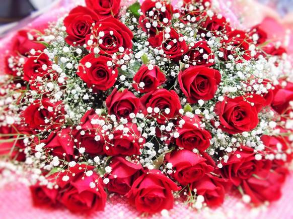
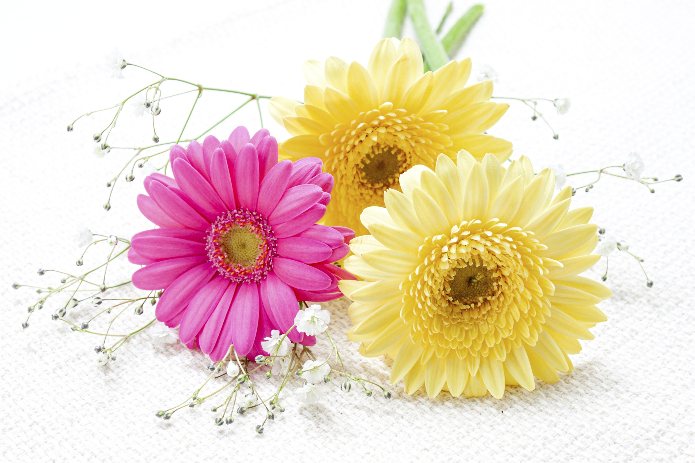
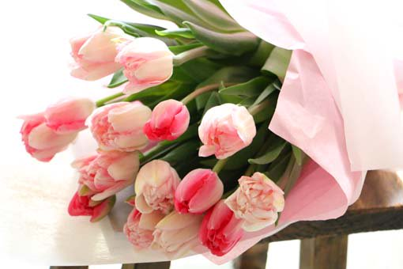
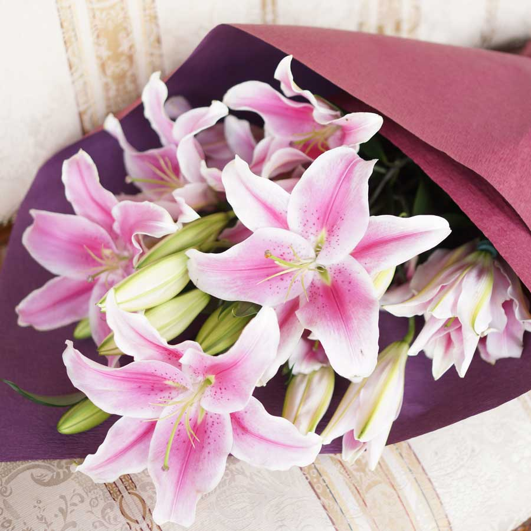
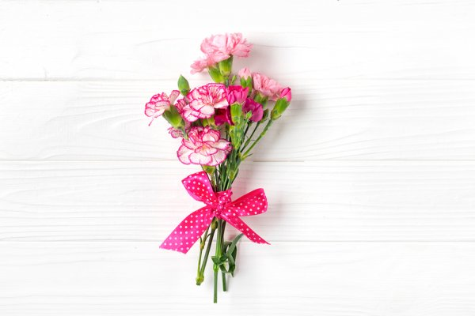
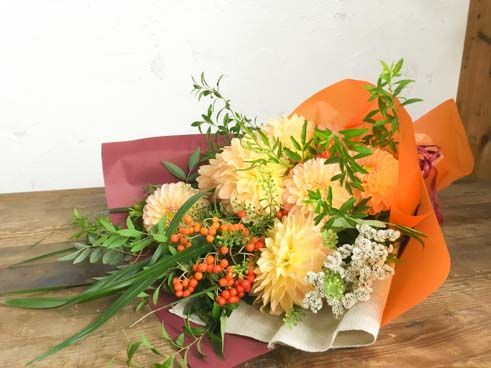

- 
-
- ・バラ
- 数多くある花のなかで、圧倒的な人気を誇るバラ。それはギフトシーンでも変わることはありません。自分もしくは贈る相手がバラ好きという場合はもちろん、豪華な花＝バラという印象が一般的に強いことも、バラが選ばれる理由にあります。花びらをたっぷり重ねるバラは、少量でも華やかになる花。季節の花と合わせて、お祝いの席を彩るのにぴったりです。卒業や入園･入学、発表会、出産、新築などのお祝い、誕生日や結婚の記念日などの人生の節目に、ぜひ、バラで華を添えてみてください。
- 
-
- ・ガーベラ
- ガーベラは、オレンジ色やビビッドイエローなどのはっきりした色が多く、元気いっぱいな印象があるので、相手を励ましたいとき、気持ちを明るくしたいときにもおすすめです。たとえば、試合や大事なプレゼンなどの負けられない勝負事の前、若い人のお見舞いのときなどです。形のかわいらしさを生かして、出産祝いや子どもの誕生日などに贈るのもよいですね。
1輪が大きいのに1本150～250円と安価でもあるので、1輪だけの花贈りにも選びたい花です。クラス全員、会社の新入社員たちへ…など、大人数に花を贈る際には、ぜひ色違いを何種類か用意して、1本ずつペーパーに包んで贈ってみてください。
- 
-
- ・チューリップ
- 多彩な種類があるチューリップは、幅広いイメージを演出でき、どんなシチュエーションにも合わせることができます。たっぷりあしらって結婚式や誕生日などのお祝いの場で贈るのはもちろん、数本を束ねていただき物のお礼代わりに渡したり、プレゼントに添えて季節感を出したり、といった使い方ができます。
なかでもいちばんおすすめなのは、子どもへの花贈り。子どもがはっきり認識できる花の種類は限られていますが、チューリップは幼稚園などでも馴染みがあります。3月～4月中旬にいちばん出回り、花の旬が重なることからも、卒園・卒業、入園・入学のお祝いにぴったりです！
- 
-
- ・ユリ
- 圧倒的な存在感と華やかさがあるユリは、お祝いの席へ贈るギフトの主役に、ぴったりの花です。大きく開く花なので、飾るときは、広い空間が必要になります。また、香りが強い品種ほど、広い空間がふさわしいともいえます。
たとえば、開店祝いやイベントなどに贈る、スタンド花や大きなアレンジでは、ユリは重宝されます。大輪のユリは華やかで見栄えのよさが特徴。明るい黄色やオレンジ系は、特に好まれます。また、白い大輪ユリの代名詞でもあるカサブランカは、大きな花束のオーダーの際は、品種で指定されることも多いとか。
ただし、飲食店へユリの花を贈るときは、香りには要注意を。強い香りの花は、料理の邪魔をするので避けましょう。
- 
-
- ・カーネーション
- カーネーションは非常にもちのいい花です。ですから、暑くて花が長もちしない夏場のフラワーギフトには大いに力を発揮してくれます。状態のいいものを購入して毎日きちんと水替えをしておけば、2週間近くも咲き続けてくれるのですから、贈られた相手もきっと満足してくれるはず。それでいてバラなどより安価だし、ボリュームもたっぷりなので、とても費用対効果の高い花と言えます。
手間がかからないという意味では、花のケアに時間を割けない忙しい相手や、病院や施設に入院している人への贈り花としても重宝します。花びらが散ったり落ちたりしないのも、こうしたシーンにおいては大きなメリットでしょう。
- 
-
- ・ダリア
- ダリアはまず、お祝い事全般にふさわしい花と言えます。特に好まれるのは、開店祝いや発表会、栄転祝いなど。大輪の鮮やかなダリアを選ぶことで、多くの人が目にするシーンで本領発揮！お祝いにかけつけた人たちにも、晴れやかさがひと目で伝わります。おめでたい席では、周囲の目を引く花選びもフラワーギフトのマナーかもしれません。
では、それ以外のシーンには向かないもの？ いえいえ、そうではありません。ふだんのちょっとしたお礼など、デイリーなプレゼントにもぜひ、使ってみましょう。存在感のあるダリアは、たとえ1本でも、贈られたらうれしい花。親しみを込めて贈るなら、丸いボール咲きやポンポン咲きの花がよいかもしれません。

-
- ・アネモネ
- アネモネは草花系の花なので、カジュアルなシーンのフラワーギフトに向いています。たとえば、プレゼントの品物に小さなアネモネの花束を添える、いただき物のお礼にアネモネのアレンジを渡す、などの使い方です。
もうひとつ、アネモネの花色のなかでも特によく知られる、濃い紫色の花には特別な使い方があります。花芯が黒く、落ち着きのあるたたずまいなので、お悔やみの花としても使われるそう。また、アネモネの紫色はシックなだけでなく、高級感と深みがあるので、男性や年配の方へのフラワーギフトにも最適です。最近、登場し始めた大輪タイプは1本600円前後と高価ですが、華やかで花もちが非常によいので、お祝いの席のフラワーギフトにおすすめです。